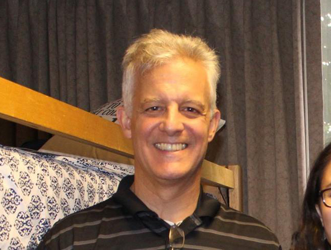

Anthony Vartuli
Anthony Vartuli

Information
Gender
Male
Other names
None
Date of birth
February 24, 1963
Occupation
Chaplin
Pets
Toby
Likes
Meaningful exchanges
Dislikes
Pretentious exchanges
Overview of Life
Anthony Vartuli is the father of Giovanna, and he is married to Diane. He grew up in Connecticut with his parents and his two sisters, Anne and Julie. He majored in Business in college, but ended up studying theology and working as a pastor for several churches in later years.
Anthony and Diane met in Texas and, after a few years, eventually got married and had three kids, Michael, Giovanna, and Julia. They settled down in Centennial, Colorado after moving around for a bit and remain there to this day.
Anthony and Giovanna share a lot in common, including their passionate love of reading, their affinity for action and fantasy movie series (Lord of the Rings, Mission Impossible, Pirates of the Caribbean, etc.), and their introverted nature.
Anthony and Diane met in Texas and, after a few years, eventually got married and had three kids, Michael, Giovanna, and Julia. They settled down in Centennial, Colorado after moving around for a bit and remain there to this day.
Anthony and Giovanna share a lot in common, including their passionate love of reading, their affinity for action and fantasy movie series (Lord of the Rings, Mission Impossible, Pirates of the Caribbean, etc.), and their introverted nature.
◦ Giovanna was born in the same hospital that Anthony was.
◦ Anthony has written a book called Breaking Through that can be found on Amazon.
◦ Anthony’s father built many of the homes his family lived in.
◦ Giovanna and Anthony have matching mugs.
◦ Anthony loves Tom Cruise movies.
◦ Anthony has written a book called Breaking Through that can be found on Amazon.
◦ Anthony’s father built many of the homes his family lived in.
◦ Giovanna and Anthony have matching mugs.
◦ Anthony loves Tom Cruise movies.